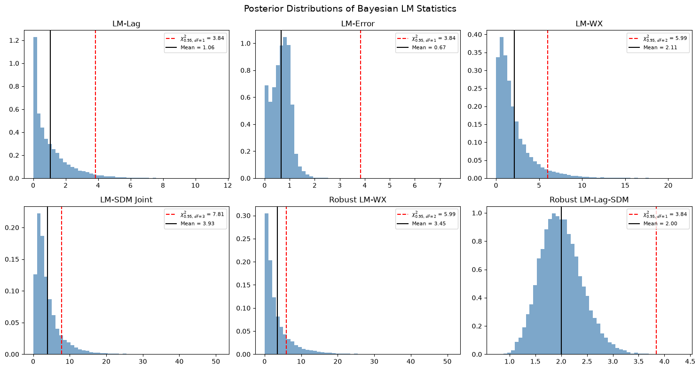

How to run Bayesian LM specification tests¶
You have a spatial dataset and need to decide which model to fit: is the dependence in the outcome (a lag), in the errors, in the neighbours’ covariates, or some combination? The Lagrange-Multiplier tests answer that before you commit to a specification.
neighbayes evaluates each LM statistic at every posterior draw, so you get a
posterior distribution of the statistic rather than a single point. The full
inventory of tests, their null hypotheses and degrees of freedom, and the
Neyman-orthogonal construction behind the robust variants are in
Supported Models.
import warnings
import libpysal
import matplotlib.pyplot as plt
import numpy as np
import pandas as pd
from neighbayes.diagnostics.lmtests import (
bayesian_lm_error_sdm_test,
bayesian_lm_error_test,
bayesian_lm_lag_sdem_test,
bayesian_lm_lag_test,
bayesian_lm_sdm_joint_test,
bayesian_lm_slx_error_joint_test,
bayesian_lm_wx_sem_test,
bayesian_lm_wx_test,
bayesian_robust_lm_error_sdem_test,
bayesian_robust_lm_error_test,
bayesian_robust_lm_lag_sdm_test,
bayesian_robust_lm_lag_test,
bayesian_robust_lm_wx_test,
)
from neighbayes.models import OLS, SAR, SDEM, SDM, SEM, SLX
warnings.filterwarnings("ignore", category=FutureWarning)
warnings.filterwarnings("ignore", category=UserWarning)
/home/runner/micromamba/envs/test/lib/python3.14/site-packages/tqdm/auto.py:21: TqdmWarning: IProgress not found. Please update jupyter and ipywidgets. See https://ipywidgets.readthedocs.io/en/stable/user_install.html
from .autonotebook import tqdm as notebook_tqdm
Set up data and weights¶
We create a simple spatial DGP with known parameters to validate the tests. Under the null hypothesis (no spatial effects), the Bayesian LM statistics should be small with high p-values.
import geopandas as gpd
from libpysal.graph import Graph
from libpysal.weights import Rook
# Generate data under H0: no spatial effects
np.random.seed(42)
# Load Columbus dataset for spatial weights
columbus_path = libpysal.examples.get_path("columbus.shp")
gdf = gpd.read_file(columbus_path)
# Create a Graph (modern libpysal API) for neighbayes models
# Row-standardize the graph so spatial models work correctly
g = Graph.build_contiguity(gdf, rook=True).transform("r")
n = g.n
# Legacy W for spreg comparison
w_spreg = Rook.from_shapefile(columbus_path)
w_spreg.transform = "r"
# Get sparse and dense W matrices
W_sparse = g.sparse.tocsr().astype(np.float64)
W_dense = np.array(W_sparse.todense())
# Design matrix
k = 3
X = np.column_stack([np.ones(n), np.random.normal(size=(n, k - 1))])
beta_true = np.array([1.0, 2.0, -1.5])
y = X @ beta_true + np.random.normal(scale=1.0, size=n)
print(f"W shape: {W_sparse.shape}, nnz: {W_sparse.nnz}")
W shape: (49, 49), nnz: 200
Fit the null models the tests need¶
The Bayesian LM tests require posterior draws from the null model (the model under H₀). Different tests use different null models:
LM-WX test: SAR model (includes ρ but not γ)
LM-SDM joint test: OLS model (no spatial params)
LM-SLX-Error joint test: OLS model (no spatial params)
Robust LM-Lag-SDM: SLX model (includes γ but not ρ)
Robust LM-WX: SAR model (includes ρ but not γ)
Robust LM-Error-SDEM: SLX model (includes γ but not λ)
# Fit OLS model (null for joint tests)
ols_model = OLS(y=y, X=X, W=g)
ols_model.fit(draws=5000, tune=5000, chains=4, random_seed=42)
# Fit SAR model (null for LM-WX and robust LM-WX)
sar_model = SAR(y=y, X=X, W=g)
sar_model.fit(draws=5000, tune=5000, chains=4, random_seed=42)
# Fit SLX model (null for robust LM-Lag-SDM and robust LM-Error-SDEM)
slx_model = SLX(y=y, X=X, W=g)
slx_model.fit(draws=5000, tune=5000, chains=4, random_seed=42)
Initializing NUTS using jitter+adapt_diag...
Multiprocess sampling (4 chains in 2 jobs)
NUTS: [beta, sigma2]
Sampling 4 chains for 5_000 tune and 5_000 draw iterations (20_000 + 20_000 draws total) took 17 seconds.
/home/runner/micromamba/envs/test/lib/python3.14/site-packages/neighbayes/_logdet/_jax.py:188: ComplexWarning: Casting complex values to real discards the imaginary part
W_arr = np.asarray(W, dtype=np.float64)
Initializing NUTS using jitter+adapt_diag...
Multiprocess sampling (4 chains in 2 jobs)
NUTS: [beta, sigma2]
Sampling 4 chains for 5_000 tune and 5_000 draw iterations (20_000 + 20_000 draws total) took 18 seconds.
Gibbs sampling (sar): 4 chains for 5,000 tune and 5,000 draw iterations (4 x 10,000 = 40,000 draws total)
Sampling took 4s (9,459 draws/s)
-
<xarray.Dataset> Size: 1MB Dimensions: (chain: 4, draw: 5000, coefficient: 5) Coordinates: * chain (chain) int64 32B 0 1 2 3 * draw (draw) int64 40kB 0 1 2 3 4 5 ... 4994 4995 4996 4997 4998 4999 * coefficient (coefficient) <U4 80B 'x0' 'x1' 'x2' 'W*x1' 'W*x2' Data variables: beta (chain, draw, coefficient) float64 800kB 1.111 2.242 ... 0.1962 sigma2 (chain, draw) float64 160kB 1.597 1.393 1.32 ... 1.29 1.257 sigma (chain, draw) float64 160kB 1.264 1.18 1.149 ... 1.136 1.121 Attributes: created_at: 2026-09-13T00:09:18.536873+00:00 arviz_version: 0.23.4 inference_library: pymc inference_library_version: 5.28.5 sampling_time: 17.812553882598877 tuning_steps: 5000 -
<xarray.Dataset> Size: 3MB Dimensions: (chain: 4, draw: 5000) Coordinates: * chain (chain) int64 32B 0 1 2 3 * draw (draw) int64 40kB 0 1 2 3 4 ... 4996 4997 4998 4999 Data variables: (12/18) process_time_diff (chain, draw) float64 160kB 0.0004735 ... 0.0001255 reached_max_treedepth (chain, draw) bool 20kB False False ... False False largest_eigval (chain, draw) float64 160kB nan nan nan ... nan nan n_steps (chain, draw) float64 160kB 15.0 7.0 7.0 ... 7.0 3.0 perf_counter_start (chain, draw) float64 160kB 210.3 210.3 ... 217.7 step_size_bar (chain, draw) float64 160kB 0.5441 0.5441 ... 0.5554 ... ... energy_error (chain, draw) float64 160kB 0.3811 ... -0.179 diverging (chain, draw) bool 20kB False False ... False False smallest_eigval (chain, draw) float64 160kB nan nan nan ... nan nan lp (chain, draw) float64 160kB -88.98 -87.89 ... -86.2 step_size (chain, draw) float64 160kB 0.5279 0.5279 ... 0.571 divergences (chain, draw) int64 160kB 0 0 0 0 0 0 ... 0 0 0 0 0 0 Attributes: created_at: 2026-09-13T00:09:18.560749+00:00 arviz_version: 0.23.4 inference_library: pymc inference_library_version: 5.28.5 sampling_time: 17.812553882598877 tuning_steps: 5000 -
<xarray.Dataset> Size: 784B Dimensions: (obs_dim_0: 49) Coordinates: * obs_dim_0 (obs_dim_0) int64 392B 0 1 2 3 4 5 6 7 ... 42 43 44 45 46 47 48 Data variables: obs (obs_dim_0) float64 392B 2.206 -0.2238 -0.5325 ... 3.193 -0.03629 Attributes: created_at: 2026-09-13T00:09:18.564839+00:00 arviz_version: 0.23.4 inference_library: pymc inference_library_version: 5.28.5
Test for a lag, an error, or lagged covariates¶
These tests assume the nuisance parameters are correctly specified (zero). They are the Bayesian analogues of the classical LM tests from Koley & Bera (2024).
# Fit the SEM null required by LM-WX-SEM (Bayesian analogue of Koley–Bera 2024).
sem_model = SEM(y=y, X=X, W=g)
sem_model.fit(draws=2500, tune=2500, chains=2, random_seed=42)
# Non-robust Bayesian LM tests evaluated at the appropriate null model.
non_robust_results = pd.DataFrame(
[
bayesian_lm_lag_test(ols_model).to_series(),
bayesian_lm_error_test(ols_model).to_series(),
bayesian_lm_wx_test(sar_model).to_series(),
bayesian_lm_wx_sem_test(sem_model).to_series(),
bayesian_lm_sdm_joint_test(ols_model).to_series(),
bayesian_lm_slx_error_joint_test(ols_model).to_series(),
],
index=[
"LM-Lag",
"LM-Error",
"LM-WX",
"LM-WX-SEM",
"LM-SDM Joint",
"LM-SLX-Error Joint",
],
)
non_robust_results
/home/runner/micromamba/envs/test/lib/python3.14/site-packages/neighbayes/_logdet/_jax.py:188: ComplexWarning: Casting complex values to real discards the imaginary part
W_arr = np.asarray(W, dtype=np.float64)
Gibbs sampling (sem): 2 chains for 2,500 tune and 2,500 draw iterations (2 x 5,000 = 10,000 draws total)
Sampling took 4s (2,798 draws/s)
| lm_samples | mean | median | credible_interval | bayes_pvalue | test_type | df | n_draws | k_wx | |
|---|---|---|---|---|---|---|---|---|---|
| LM-Lag | [0.2142964999714562, 1.0784033337488124, 1.280... | 1.063234 | 0.656830 | (0.00204675682175708, 4.2687677969034805) | 0.302479 | bayesian_lm_lag | 1 | 20000 | NaN |
| LM-Error | [0.7079187163674764, 0.7756572487282847, 0.744... | 0.669052 | 0.683859 | (0.014393878917328799, 1.3853911845443372) | 0.413382 | bayesian_lm_error | 1 | 20000 | NaN |
| LM-WX | [1.4814399069845414, 3.360987014281438, 0.8809... | 2.112357 | 1.413838 | (0.09593622926595723, 8.194730280544038) | 0.347782 | bayesian_lm_wx | 2 | 20000 | 2.0 |
| LM-WX-SEM | [3.2315485732635807, 1.0743489513363125, 0.196... | 1.351305 | 0.898337 | (0.05536302605253931, 5.110249054287485) | 0.508824 | bayesian_lm_wx_sem | 2 | 5000 | 2.0 |
| LM-SDM Joint | [0.7240693263411846, 2.7662057621909844, 2.499... | 3.926935 | 2.786218 | (0.42552310256782655, 14.128384100207635) | 0.269463 | bayesian_lm_sdm_joint | 3 | 20000 | 2.0 |
| LM-SLX-Error Joint | [1.3998088300832858, 3.5034345838334366, 1.597... | 2.113251 | 1.633809 | (0.7011929236378855, 6.1492522670831296) | 0.549237 | bayesian_lm_slx_error_joint | 3 | 20000 | 2.0 |
Use the robust variants when both channels may be present¶
These tests use the Neyman orthogonal score adjustment from Dogan et al. (2021, Proposition 3) to ensure robustness against local misspecification in the nuisance parameter. This is the key innovation over the classical Bera-Yoon (1993) approach.
The adjustment removes the correlation between the test parameter score and the nuisance parameter score:
where \(J_{\cdot \cdot \cdot \sigma}\) denotes information matrix blocks partitioned on \(\sigma^2\).
# Robust Bayesian LM tests (Neyman orthogonal score)
robust_results = pd.DataFrame(
[
bayesian_robust_lm_lag_test(ols_model).to_series(),
bayesian_robust_lm_error_test(ols_model).to_series(),
bayesian_robust_lm_lag_sdm_test(slx_model).to_series(),
bayesian_robust_lm_wx_test(sar_model).to_series(),
bayesian_robust_lm_error_sdem_test(slx_model).to_series(),
],
index=[
"Robust LM-Lag",
"Robust LM-Error",
"Robust LM-Lag-SDM",
"Robust LM-WX",
"Robust LM-Error-SDEM",
],
)
robust_results
| lm_samples | mean | median | credible_interval | bayes_pvalue | test_type | df | n_draws | k_wx | tr_MzWMzW_pair | |
|---|---|---|---|---|---|---|---|---|---|---|
| Robust LM-Lag | [0.04470652999465163, 0.06039321001634612, 0.0... | 0.052556 | 0.049121 | (0.021080445691699274, 0.10259303831611782) | 0.818673 | bayesian_robust_lm_lag | 1 | 20000 | NaN | NaN |
| Robust LM-Error | [0.2592088833186119, 0.35016040229998335, 0.23... | 0.304723 | 0.284806 | (0.12222462329905084, 0.5948354055071119) | 0.580937 | bayesian_robust_lm_error | 1 | 20000 | NaN | NaN |
| Robust LM-Lag-SDM | [1.497849382284626, 1.7175227063115825, 1.8123... | 2.003181 | 1.974842 | (1.2853662789897897, 2.877608504387878) | 0.156969 | bayesian_robust_lm_lag_sdm | 1 | 20000 | 2.0 | 19.966602 |
| Robust LM-WX | [2.548722904936673, 2.5345872759229016, 0.1998... | 3.448256 | 1.918213 | (0.08724517028584271, 15.464011910652697) | 0.178328 | bayesian_robust_lm_wx | 2 | 20000 | 2.0 | NaN |
| Robust LM-Error-SDEM | [1.4121519102807134, 1.6051095505017356, 1.687... | 1.844711 | 1.826631 | (1.222114877277616, 2.565960814166178) | 0.174400 | bayesian_robust_lm_error_sdem | 1 | 20000 | 2.0 | 19.966602 |
Read the whole posterior, not just the point statistic¶
A key advantage of the Bayesian approach is that we get a full posterior distribution of the LM statistic, not just a point estimate. This allows us to compute credible intervals and posterior probabilities.
from scipy import stats as sp_stats
# Show six representative posterior LM distributions (a mix of non-robust and
# robust variants). Each panel overlays the chi-squared 95% reference and the
# posterior mean.
panels = [
("LM-Lag", bayesian_lm_lag_test(ols_model)),
("LM-Error", bayesian_lm_error_test(ols_model)),
("LM-WX", bayesian_lm_wx_test(sar_model)),
("LM-SDM Joint", bayesian_lm_sdm_joint_test(ols_model)),
("Robust LM-WX", bayesian_robust_lm_wx_test(sar_model)),
("Robust LM-Lag-SDM", bayesian_robust_lm_lag_sdm_test(slx_model)),
]
fig, axes = plt.subplots(2, 3, figsize=(15, 8))
for ax, (name, res) in zip(axes.flat, panels):
ax.hist(res.lm_samples, bins=50, density=True, alpha=0.7, color="steelblue")
chi2_ref = sp_stats.chi2.ppf(0.95, res.df)
ax.axvline(
chi2_ref,
color="red",
linestyle="--",
label=f"$\\chi^2_{{0.95,\\,df={res.df}}}$ = {chi2_ref:.2f}",
)
ax.axvline(res.mean, color="black", linestyle="-", label=f"Mean = {res.mean:.2f}")
ax.set_title(name)
ax.legend(fontsize=8)
plt.suptitle("Posterior Distributions of Bayesian LM Statistics", fontsize=14)
plt.tight_layout()
plt.show()

Get a recommendation instead of a table¶
Every fitted spatial model exposes spatial_diagnostics() and spatial_diagnostics_decision().
The registry on each class wires the correct tests for its specification:
OLS →
LM-Lag,LM-Error,LM-SDM-Joint,LM-SLX-Error-Joint,Robust-LM-Lag,Robust-LM-ErrorSAR →
LM-Error,LM-WX,Robust-LM-WXSEM →
LM-Lag,LM-WXSLX →
LM-Lag,LM-Error,Robust-LM-Lag-SDM,Robust-LM-Error-SDEMSDM →
LM-Error-SDM(uses correct \(e = y - \rho Wy - X\beta - WX\gamma\) residuals)SDEM →
LM-Lag-SDEM(uses \((I-\lambda W)\)-filtered residuals)
# Method-based API: one call returns all wired tests as a DataFrame
ols_model.spatial_diagnostics()
| statistic | median | df | p_value | ci_lower | ci_upper | |
|---|---|---|---|---|---|---|
| test | ||||||
| LM-Lag | 1.063234 | 0.656830 | 1 | 0.302479 | 0.002047 | 4.268768 |
| LM-Error | 0.669052 | 0.683859 | 1 | 0.413382 | 0.014394 | 1.385391 |
| LM-SDM-Joint | 3.926935 | 2.786218 | 3 | 0.269463 | 0.425523 | 14.128384 |
| LM-SLX-Error-Joint | 2.113251 | 1.633809 | 3 | 0.549237 | 0.701193 | 6.149252 |
| Robust-LM-Lag | 0.052556 | 0.049121 | 1 | 0.818673 | 0.021080 | 0.102593 |
| Robust-LM-Error | 0.304723 | 0.284806 | 1 | 0.580937 | 0.122225 | 0.594835 |
# The decision routine walks the appropriate tests and returns a recommendation
print("OLS recommends:")
ols_model.spatial_diagnostics_decision()
OLS recommends:

print("SAR recommends:")
sar_model.spatial_diagnostics_decision()
SAR recommends:

print("SLX recommends:")
slx_model.spatial_diagnostics_decision()
SLX recommends:

# SDM/SDEM-aware tests require fitted SDM / SDEM models so the residuals
# include the correct spatial filters.
sdm_model = SDM(y=y, X=X, W=g)
sdm_model.fit(draws=2000, tune=2000, chains=2, random_seed=42)
sdem_model = SDEM(y=y, X=X, W=g)
sdem_model.fit(draws=2000, tune=2000, chains=2, random_seed=42)
pd.DataFrame(
[
bayesian_lm_error_sdm_test(sdm_model).to_series(),
bayesian_lm_lag_sdem_test(sdem_model).to_series(),
],
index=["LM-Error-SDM", "LM-Lag-SDEM"],
)
/home/runner/micromamba/envs/test/lib/python3.14/site-packages/neighbayes/_logdet/_jax.py:188: ComplexWarning: Casting complex values to real discards the imaginary part
W_arr = np.asarray(W, dtype=np.float64)
Gibbs sampling (sdm): 2 chains for 2,000 tune and 2,000 draw iterations (2 x 4,000 = 8,000 draws total)
Sampling took 3s (2,528 draws/s)
Gibbs sampling (sdem): 2 chains for 2,000 tune and 2,000 draw iterations (2 x 4,000 = 8,000 draws total)
Sampling took 3s (2,300 draws/s)
| lm_samples | mean | median | credible_interval | bayes_pvalue | test_type | df | n_draws | |
|---|---|---|---|---|---|---|---|---|
| LM-Error-SDM | [0.32821317533390937, 0.1084400084000235, 0.35... | 1.163491 | 0.330490 | (0.0005711733395424328, 7.945960590111098) | 0.280743 | bayesian_lm_error_sdm | 1 | 4000 |
| LM-Lag-SDEM | [5.220403887297558, 3.5843989225132207, 0.0223... | 1.923766 | 0.835193 | (0.001694640195268472, 9.986359293919964) | 0.165442 | bayesian_lm_lag_sdem | 1 | 4000 |
Run the same tests on panel data¶
The same Bayesian LM machinery extends to balanced spatial panels. Tests of
the form bayesian_panel_lm_* and bayesian_panel_robust_lm_* are wired into
every panel model (OLSPanelFE, SARPanelFE, SLXPanelFE, …) and surfaced
through the same spatial_diagnostics() / spatial_diagnostics_decision()
methods.
Below we simulate a small balanced panel (\(N = 81\), \(T = 4\)) from the panel fixed-effects OLS DGP and run the full diagnostic table.
from neighbayes.dgp.panel_fe import simulate_panel_sar_fe
from neighbayes.dgp.utils import rook_grid_weights
from neighbayes.models import OLSPanelFE
# 9x9 rook grid (N=81), T=4 — small enough to fit quickly but large enough for
# the LM tests to behave well.
N_panel, T_panel = 81, 4
W_panel_dense, W_panel_graph = rook_grid_weights(int(np.sqrt(N_panel)))
# Simulate from a SAR-FE DGP with moderate spatial dependence so the LM-Lag
# direction is clearly significant.
panel_sim = simulate_panel_sar_fe(
N=N_panel,
T=T_panel,
rho=0.4,
beta=np.array([1.0, 2.0]),
W=W_panel_graph,
seed=11,
)
panel_model = OLSPanelFE(
y=panel_sim["y"],
X=panel_sim["X"],
W=W_panel_graph,
N=N_panel,
T=T_panel,
effects=3, # two-way fixed effects (unit + time)
)
panel_model.fit(draws=600, tune=600, chains=2, random_seed=11, progressbar=False)
panel_model.spatial_diagnostics()
Initializing NUTS using jitter+adapt_diag...
Multiprocess sampling (2 chains in 2 jobs)
NUTS: [beta, sigma2]
Sampling 2 chains for 600 tune and 600 draw iterations (1_200 + 1_200 draws total) took 5 seconds.
We recommend running at least 4 chains for robust computation of convergence diagnostics
| statistic | median | df | p_value | ci_lower | ci_upper | |
|---|---|---|---|---|---|---|
| test | ||||||
| Panel-LM-Lag | 84.694264 | 84.656800 | 1 | 0.000000e+00 | 77.426851 | 91.951679 |
| Panel-LM-Error | 22.321703 | 21.940709 | 1 | 2.305858e-06 | 11.806254 | 34.658109 |
| Panel-LM-SDM-Joint | 88.138628 | 88.039371 | 2 | 0.000000e+00 | 82.867041 | 93.807878 |
| Panel-LM-SLX-Error-Joint | 88.422994 | 88.041710 | 2 | 0.000000e+00 | 78.285630 | 100.394412 |
| Panel-Robust-LM-Lag | 67.184064 | 66.740233 | 1 | 2.220446e-16 | 47.935579 | 91.675476 |
| Panel-Robust-LM-Error | 3.341650 | 3.319574 | 1 | 6.754686e-02 | 2.384254 | 4.559821 |
print(
f"Panel decision tree (DGP = SAR-FE) recommends: {panel_model.spatial_diagnostics_decision(alpha=0.05, format='model')}"
)
Panel decision tree (DGP = SAR-FE) recommends: SARPanelFE
panel_model.spatial_diagnostics_decision(
alpha=0.05,
)

Run them on origin–destination flows¶
Origin–destination flow models in neighbayes.models.flow use Kronecker
weight matrices \(W_d, W_o, W_w\) for destination, origin, and network
spillovers respectively. The Bayesian LM family for flows tests each
direction separately (bayesian_lm_flow_dest_test,
bayesian_lm_flow_orig_test, bayesian_lm_flow_network_test,
bayesian_lm_flow_intra_test) plus a joint test
(bayesian_lm_flow_joint_test). Robust variants are available for the
destination, origin, and network directions.
The registry on OLSFlow wires the full set; SARFlow (which already includes
all three lag terms) wires the robust variants for marginal-extension testing.
from neighbayes.dgp.flows import generate_flow_data
from neighbayes.models import OLSFlow, SARFlow
# Simulate a small SAR flow DGP on n=8 spatial units (N = 64 OD cells).
flow_data = generate_flow_data(
n=8,
rho_d=0.35,
rho_o=0.25,
rho_w=0.10,
beta_d=[1.0, -0.5],
beta_o=[0.5, 0.3],
sigma=1.0,
seed=42,
)
y_flow = np.log(flow_data["y_vec"]) # latent SAR scale (DGP default is lognormal)
X_flow = flow_data["X"]
G_flow = flow_data["G"]
ols_flow = OLSFlow(y_flow, X_flow, G_flow, col_names=flow_data["col_names"])
ols_flow.fit(draws=600, tune=600, chains=2, random_seed=42, progressbar=False)
ols_flow.spatial_diagnostics()
Initializing NUTS using jitter+adapt_diag...
Multiprocess sampling (2 chains in 2 jobs)
NUTS: [beta, sigma]
Sampling 2 chains for 600 tune and 600 draw iterations (1_200 + 1_200 draws total) took 5 seconds.
We recommend running at least 4 chains for robust computation of convergence diagnostics
| statistic | median | df | p_value | ci_lower | ci_upper | |
|---|---|---|---|---|---|---|
| test | ||||||
| LM-Flow-Dest | 0.449894 | 0.212377 | 1 | 0.502386 | 0.000395 | 2.271064 |
| LM-Flow-Orig | 0.628676 | 0.337023 | 1 | 0.427842 | 0.000724 | 2.949834 |
| LM-Flow-Network | 0.430998 | 0.184981 | 1 | 0.511499 | 0.000299 | 2.296940 |
| LM-Flow-Joint | 1.535489 | 1.165474 | 3 | 0.674104 | 0.117953 | 5.115903 |
| LM-Flow-Intra | 1.171645 | 0.916407 | 3 | 0.759813 | 0.071717 | 3.916607 |
flow_data.keys()
dict_keys(['y_vec', 'y_mat', 'eta_vec', 'eta_mat', 'distribution', 'X', 'X_regional', 'X_regional_d', 'X_regional_o', 'col_names', 'design', 'W', 'G', 'gdf', 'dist', 'rho_d', 'rho_o', 'rho_w', 'sigma', 'beta_d', 'beta_o', 'gamma_dist'])
# Fit the SAR flow alternative; its diagnostic registry consists of the robust
# (Neyman-orthogonal) marginal-extension tests.
sar_flow = SARFlow(y_flow, X_flow, G_flow, col_names=flow_data["col_names"])
sar_flow.fit(draws=600, tune=600, chains=2, random_seed=42, progressbar=False)
sar_flow.spatial_diagnostics()
| statistic | median | df | p_value | ci_lower | ci_upper | |
|---|---|---|---|---|---|---|
| test | ||||||
| Robust-LM-Flow-Dest | 0.412042 | 0.192364 | 1 | 0.520935 | 0.000334 | 2.034098 |
| Robust-LM-Flow-Orig | 0.466157 | 0.226649 | 1 | 0.494761 | 0.000478 | 2.252824 |
| Robust-LM-Flow-Network | 0.551544 | 0.269556 | 1 | 0.457688 | 0.000538 | 2.493822 |
| LM-Flow-Intra | 1.407651 | 1.131638 | 3 | 0.703742 | 0.100356 | 4.479055 |
See also¶
Supported Models — the full test inventory, null hypotheses, degrees of freedom, and the Neyman-orthogonal score
LM tests vs
spreg— cross-implementation check against the classical statisticsLM decision-tree recovery — whether the tree lands on the model that generated the data
How to run spatial block cross-validation — the out-of-sample counterpart to specification testing